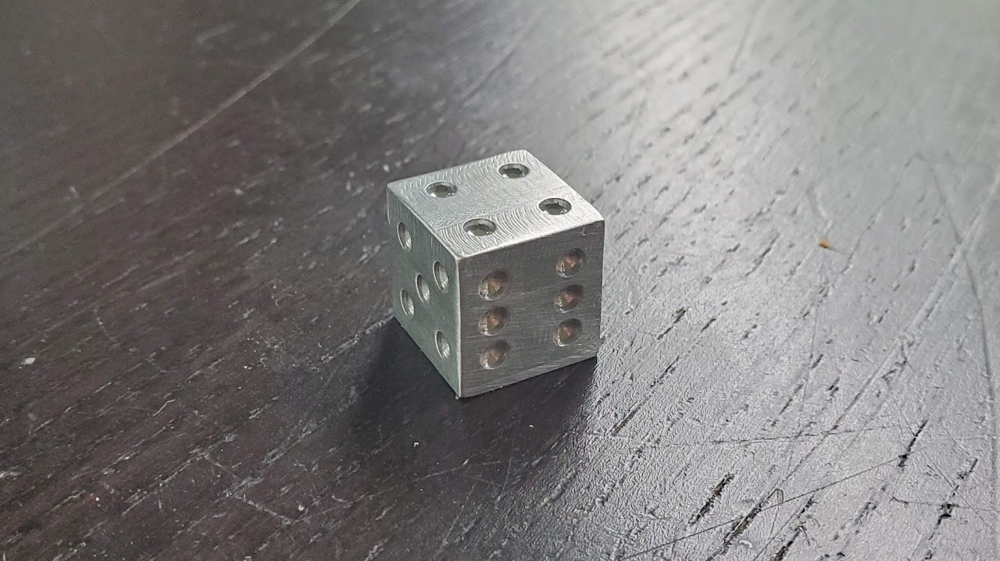

I have created both a dice and a model of the Pyramids of Giza using a
milling machine. Both models required maintaining dimensional accuracy
across each face. These were some of my first experiences using a
milling machine and helped teach me how different materials require
different techniques when milling. I have milled both steel and
aluminum, and both materials require different speeds and feed rates
when being milled. I learned a lot from this experience and how
different materials can be used in different situations.